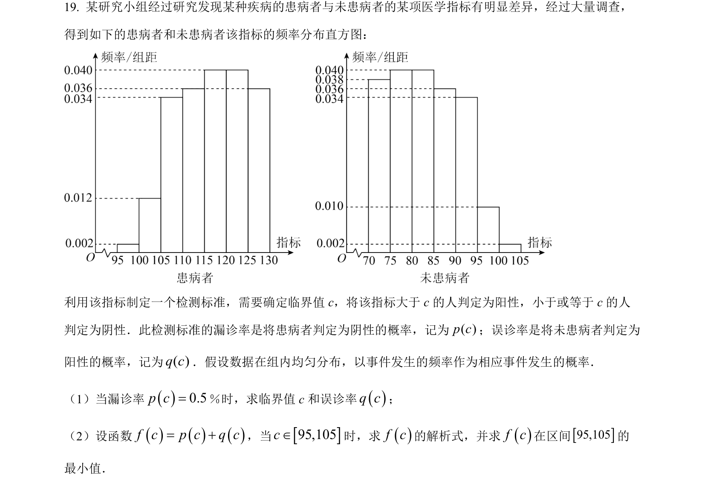
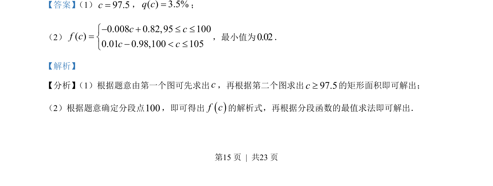
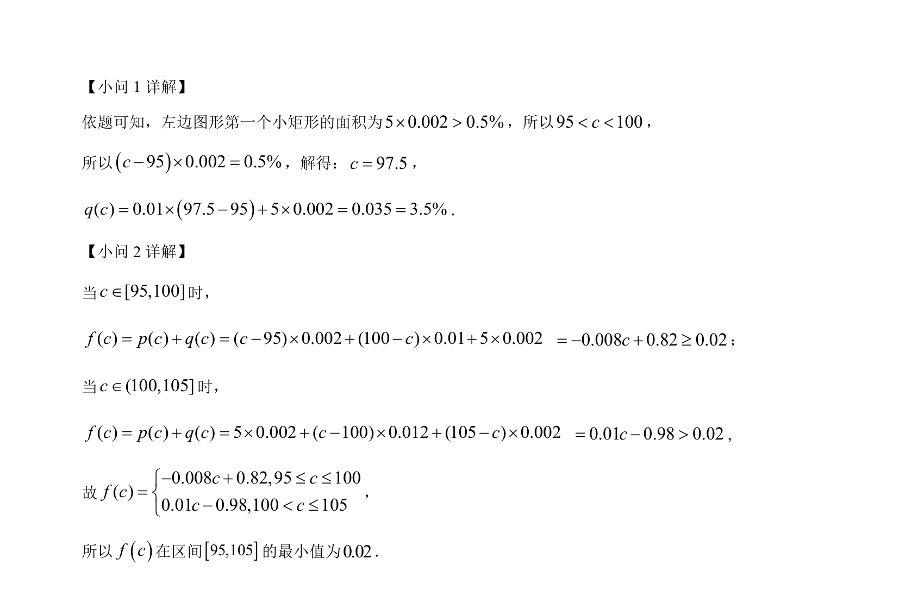

考点：频率分布直方图 分段函数 函数最值

本题通过频率分布直方图求参数并建立分段函数模型，进而求其最小值。


📄 原 PDF 第 15 页：
素材/真题/吉林/2008-2024·（吉林）数学高考真题/2023年高考数学试卷（新课标Ⅱ卷）（解析卷）.pdf
利用该指标制定一个检测标准，需要确定临界值 c，将该指标大于 c的人判定为阳性，小于或等于 c的人 判定为阴性．此检测标准的漏诊率是将患病者判定为阴性的概率，记为( )p c；误诊率是将未患病者判定为 阳性的概率，记为( )q c．假设数据在组内均匀分布，以事件发生的频率作为相应事件发生的概率． （1）当漏诊率0.5pc=％时，求临界值 c和误诊率qc； （2）设函数fcpcqc=，当95,105cÎ时，求f c的解析式，并求f c在区间95,105的 最小值．
【答案】 （1）97.5c=，( ) 3.5%q c=；
（2）
0.008 0.82,95 100( )0.01 0.98,100 105c cf cc c £ £ì=í < £î
，最小值为0.02．
【解析】
【分析】 （1）根据题意由第一个图可先求出c，再根据第二个图求出97.5c³的矩形面积即可解出；
（2）根据题意确定分段点100，即可得出f c的解析式，再根据分段函数的最值求法即可解出．